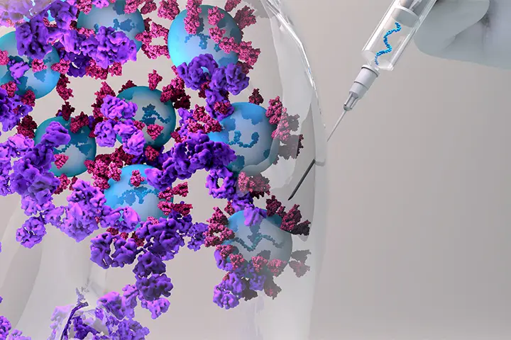

April 2022
Using Decision Tree algorithms to predict flight delays with 5 years of US weather and flight data on Databricks.
Reduced feature dimensions by 86% using feature importance of random forest
Leveraged motif finding from GraphFrame matching 80M records with previous flights and repurposed data to features.
April 2022
Using Decision Tree algorithms to predict flight delays with 5 years of U.S. weather and flight data on Databricks.
Reduced feature dimensions by 86% using feature importance of random forest
Leveraged motif finding from GraphFrame matching 80M records with previous flights and repurposed data to features.
A NLP research study on transfer learning ability of RNN and BERT models.

This project aims to classify fruits and vegetables using handcrafted features–including color and texture quantified by Fast Fourier Transforms (FFT), Histogram of Gradients (HOG), and Local Binary Pattern (LBP) – and learned features from ResNet pretrained models.

A Seq2Seq recurrent neural network model to predict probability of degradation at each RNA position.
An end-to-end data pipeline backed by containerized Kafka, Zookeeper, Spark, HDFS, and Presto.

An end-to-end data pipeline backed by containerized Kafka, Zookeeper, Spark, HDFS, and Presto.
A command line game navigates a player through lists of food options and let the player to choose what food to cook. This program will prompt a recipe file of foods selected by the player in the end.